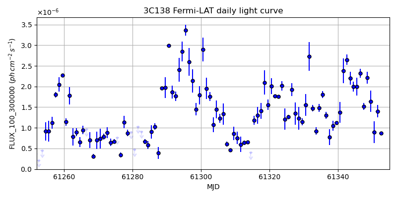
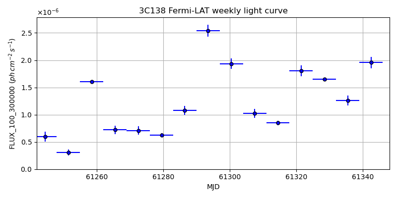
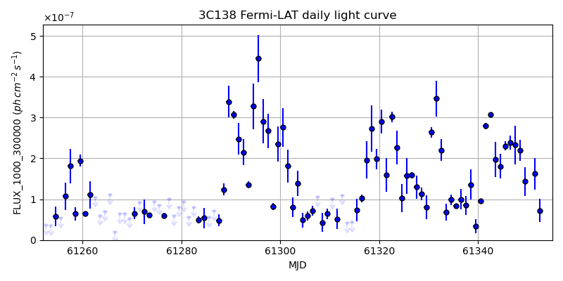
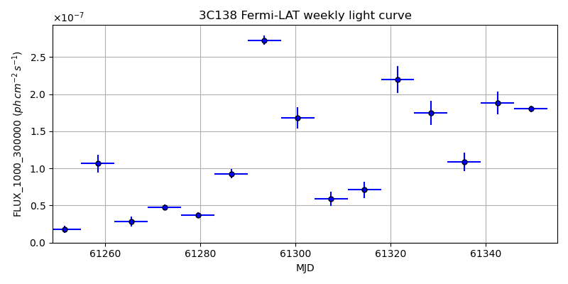

LAT Lightcurve site: https://fermi.gsfc.nasa.gov/ssc/data/access/lat/msl_lc/source/3C_138
NED: Query
Time of last update of this page: UT: 2026-11-06 16:16 (MJD: 61350.678)
| Property | Value |
|---|---|
| R.A. | 5:21:09.84 |
| Dec. | 16:38:20.4 |
| z | 0.759 |
| 3FGL SpectrumType | |
| 3FGL PL Index | -1.00 |
| 3FGL Flux_100_300000 | -1.00e+00 |
| 3FGL Flux_1000_300000 | -1.00e+00 |
| 3FGL Flux >200 GeV | -1.00e+00 |
| 3FGL Extrap. Crab >200 GeV | -1.00 |
| 3FGL Flux After EBL Absorption >200GeV | -1.00e+00 |
| 3FGL EBL Crab Fraction >200GeV | -1.00 |

| MJD | dMJD | Flux | dFlux | Frac3FGL | FracCrab>200GeV | EBLFracCrab>200GeV |
|---|---|---|---|---|---|---|
| 61345.50 | 0.50 | 2.00e-06 | 0.00e+00 | 0.00 | 0.00 | -0.00 |
| 61346.50 | 0.50 | 2.32e-06 | 0.00e+00 | 0.00 | 0.00 | -0.00 |
| 61347.50 | 0.50 | 1.52e-06 | 0.00e+00 | 0.00 | 0.00 | -0.00 |
| 61348.50 | 0.50 | 2.21e-06 | 0.00e+00 | 0.00 | 0.00 | -0.00 |
| 61349.50 | 0.50 | 1.64e-06 | 0.00e+00 | 0.00 | 0.00 | -0.00 |

| MJD | dMJD | Flux | dFlux | Frac3FGL | FracCrab>200GeV | EBLFracCrab>200GeV |
|---|---|---|---|---|---|---|
| 61314.50 | 3.50 | 8.49e-07 | 0.00e+00 | 0.00 | 0.00 | -0.00 |
| 61321.50 | 3.50 | 1.81e-06 | 0.00e+00 | 0.00 | 0.00 | -0.00 |
| 61328.50 | 3.50 | 1.65e-06 | 0.00e+00 | 0.00 | 0.00 | -0.00 |
| 61335.50 | 3.50 | 1.26e-06 | 0.00e+00 | 0.00 | 0.00 | -0.00 |
| 61342.50 | 3.50 | 1.96e-06 | 0.00e+00 | 0.00 | 0.00 | -0.00 |

| MJD | dMJD | Flux | dFlux | Frac3FGL | FracCrab>200GeV | EBLFracCrab>200GeV |
|---|---|---|---|---|---|---|
| 61345.50 | 0.50 | 2.30e-07 | 0.00e+00 | 0.00 | 0.00 | -0.00 |
| 61346.50 | 0.50 | 2.39e-07 | 0.00e+00 | 0.00 | 0.00 | -0.00 |
| 61347.50 | 0.50 | 2.33e-07 | 0.00e+00 | 0.00 | 0.00 | -0.00 |
| 61348.50 | 0.50 | 2.20e-07 | 0.00e+00 | 0.00 | 0.00 | -0.00 |
| 61349.50 | 0.50 | 1.44e-07 | 0.00e+00 | 0.00 | 0.00 | -0.00 |

| MJD | dMJD | Flux | dFlux | Frac3FGL | FracCrab>200GeV | EBLFracCrab>200GeV |
|---|---|---|---|---|---|---|
| 61314.50 | 3.50 | 7.11e-08 | 0.00e+00 | 0.00 | 0.00 | -0.00 |
| 61321.50 | 3.50 | 2.20e-07 | 0.00e+00 | 0.00 | 0.00 | -0.00 |
| 61328.50 | 3.50 | 1.75e-07 | 0.00e+00 | 0.00 | 0.00 | -0.00 |
| 61335.50 | 3.50 | 1.09e-07 | 0.00e+00 | 0.00 | 0.00 | -0.00 |
| 61342.50 | 3.50 | 1.88e-07 | 0.00e+00 | 0.00 | 0.00 | -0.00 |
--------------------------------------------------------- Using user-supplied coords: 5:21:09.84 16:38:20.4 2000 --------------------------------------------------------- FLWO UT night of: 2026-11-07 Local Sid. @ Midnight: 02:42 Sunset (-15.0) (local, UT): 18:39 01:39 Sunrise (-15.0) (local, UT): 05:36 12:36 Moonrise (local, UT): 05:16 12:16 Moonset (local, UT): Moon phase: 0.04 --------------------------------------------------------- AzTime LSID UT Obj_el Obj_az Mn_el Mn_az Sep. --------------------------------------------------------- 18:39 21:20 01:39 -15.3 58.8 -35.5 278.9 116.5 19:09 21:50 02:09 -9.7 63.4 -41.6 283.5 116.8 19:39 22:20 02:39 -2.5 67.7 -47.5 288.8 117.2 20:09 22:50 03:09 2.4 71.7 -53.3 295.3 117.5 20:39 23:20 03:39 8.3 75.4 -58.7 303.4 117.8 21:09 23:50 04:09 14.5 79.1 -63.5 313.9 118.2 21:39 00:20 04:39 20.8 82.7 -67.5 328.0 118.5 22:09 00:50 05:09 27.2 86.4 -70.0 346.2 118.9 22:39 01:20 05:39 33.6 90.3 -70.5 6.9 119.2 23:09 01:51 06:09 40.0 94.4 -68.8 26.6 119.6 23:39 02:21 06:39 46.3 99.1 -65.4 42.5 120.0 00:09 02:51 07:09 52.6 104.6 -60.9 54.4 120.3 00:39 03:21 07:39 58.7 111.4 -55.8 63.5 120.7 01:09 03:51 08:09 64.4 120.5 -50.2 70.6 121.0 01:39 04:21 08:39 69.5 133.6 -44.4 76.4 121.3 02:09 04:51 09:09 73.4 152.9 -38.4 81.4 121.7 02:39 05:21 09:39 75.0 178.9 -32.4 85.8 122.0 03:09 05:51 10:09 73.6 205.3 -26.3 89.9 122.3 03:39 06:21 10:39 69.9 225.2 -20.2 93.7 122.6 04:09 06:51 11:09 64.8 238.6 -14.2 97.5 122.9 04:39 07:21 11:39 59.1 248.0 -8.1 101.2 123.1 05:09 07:52 12:09 53.0 255.0 -1.2 105.0 123.4 05:36 08:19 12:36 47.4 260.1 3.4 108.6 123.6 --------------------------------------------------------- Dark hours >55 deg.: 4.64 srcstart (UT): 2026-11-07 07:20 srcend (UT): 2026-11-07 11:59